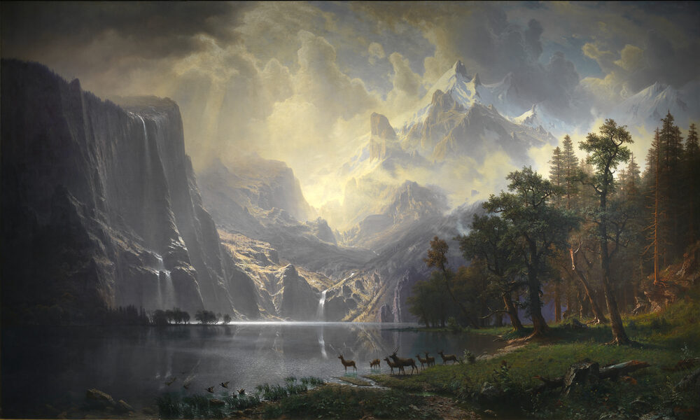
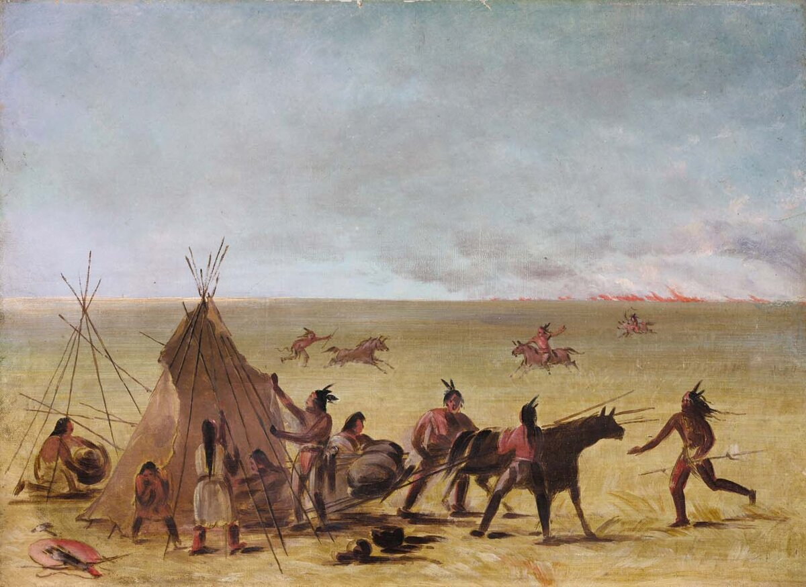
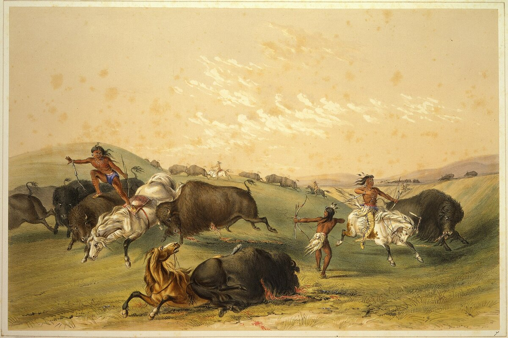

C2 · American History
The West Was Not Empty
The land looked unused because the people who had used it were already dead. Correcting that story is necessary, and the correction has its own way of going wrong.
Play the audio and follow along, then read it again on your own. Tap or hover over a highlighted word to see what it means.
Settlers moving west in the nineteenth century reported a country that looked strangely underused: open parkland, grass kept short, game in extraordinary numbers, and few people. They were describing something real. Their mistake was to read it as a natural condition rather than as a recent catastrophe and a long act of management.

The catastrophe came first and it traveled faster than the settlers did. Epidemic disease introduced from Europe moved along trade routes well ahead of European bodies, so that communities often encountered their first smallpox decades before they encountered their first colonist. Estimates of pre-contact population north of Mexico vary enormously — the serious range runs from about two million to something above ten — and the disagreement is not a sign that the question is unanswerable, only that the evidence is indirect. What is not in dispute is the scale of the loss, or that much of it occurred before the land was observed by the people who later described it as vacant.
That is why the standard image is wrong in a specific way. The country was not virgin land. It was, in a historian's phrase, widowed land: not a place where nothing had happened, but a place where almost everyone had recently died.
The second half of the correction is less often made and matters more. The landscape itself was a human product. Fire was the principal tool: controlled burning over centuries maintained the open oak woodland of California, the grass prairie at the forest edge, and the browse that drew deer and elk to places where they could be hunted. The parkland the settlers admired was not what the continent did when left alone. It was agriculture, conducted at a scale and with a technique they did not recognize as agriculture because it did not involve fences.

Nor were the societies they met timeless. The Plains cultures that are now the standard image of Native America — mounted, mobile, following the buffalo — are themselves a product of contact, because the horse arrived with the Spanish. Within a century of its spread northwards, peoples who had been farmers in river valleys had reorganised themselves around a new technology, which is to say that they did what societies presented with a transformative tool generally do. The image of the unchanging Indian is a European invention projected backwards onto a period of rapid and self-directed change.

Push this far enough and a different picture emerges, one that recent scholarship has made hard to avoid: some Native polities in the West were not merely resisting expansion but conducting their own. The Comanche dominated the southern plains for a century and a half, taxed and raided Spanish and Mexican settlements, controlled the trade in horses and captives across an enormous territory, and set limits on where European empires could go. To call this a frontier between a power and a people is to misdescribe it. It was a frontier between powers.
Here the correction becomes delicate, because it can be put to a use its authors did not intend. If Native nations held empires, took captives and fought wars of expansion, then — the argument runs — what happened to them was the ordinary fate of losers, and the moral asymmetry disappears. The inference does not hold. Agency is not a defense for whoever defeated it; establishing that a people were historical actors rather than passive victims removes a condescension, not a claim. A sovereign nation dispossessed by treaty violation is not less wronged for having been sovereign. It is more precisely wronged, and the treaties are the evidence.
What the corrected account asks of a reader is therefore uncomfortable in two directions at once. It refuses the empty continent, which flatters the settlers, and it refuses the pristine wilderness emptied of people, which flatters their modern critics; the land was neither untouched nor unpeopled, and the people were neither static nor innocent of power. The historical question — who was here, what had they built, what happened to them — turns out to have answers, and the answers are more specific, more interesting and more damning than either of the stories that replaced them.
Key Vocabulary
- underused not used as fully as it could be
- parkland open grassland with scattered trees
- game wild animals hunted for food
- pre-contact before the arrival of Europeans
- indirect (of evidence) not observed directly but inferred
- vacant empty; unoccupied
- virgin land land never cultivated or settled
- browse the young shoots and leaves that deer and similar animals feed on
- timeless unchanging; outside history
- to project backwards to read a later idea into an earlier period
- to push to press or move something forward — careful: it means the opposite of pulling
- a polity an organized political community
- to raid to attack suddenly for plunder
- a captive a person taken and held by force
- to misdescribe to describe wrongly
- to intend to plan to do something — careful: not to understand
- ordinary normal, usual — careful: it is not an insult
- agency the capacity to act and decide for oneself
- sovereign self-governing; holding supreme authority
- pristine untouched and in its original condition
- damning providing strong evidence of guilt
The West Was Not Empty — C2 · American History · Renan the Teacher, English Language Academy · https://renangrossi.github.io/englishclasses/reading/c2/the-west-was-not-empty.html
Interactive Exercises
Practice
Complete each exercise, then click Submit to see your score and an explanation for every answer.
Speaking & Writing
Discussion
There are no right answers here — use these to practice speaking, or write a short answer to each.
- The essay says the correction can be put to a use its authors did not intend. Have you seen that happen to an argument you agree with?
- Does calling controlled burning "agriculture" stretch the word, or correct it?
- "A sovereign nation dispossessed by treaty violation is not less wronged for having been sovereign." Restate that argument in your own words.
- Why might a myth that flatters critics of a society be harder to notice than one that flatters the society itself?
- Write about 300 words correcting a common story about your own country, and then state honestly what your correction could be misused to argue.